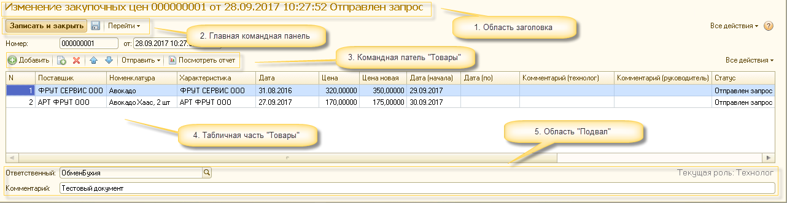
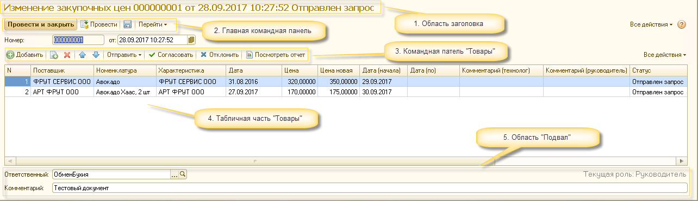

Документ "Изменение закупочных цен" предназначен для документального фиксирования изменения цен поставщиков. При проведении документа информация о новых ценах записывается в регистр сведений "Цены поставщиков", по каждой (согласованной руководителем) позиции номенклатуры.
Цена в регистре "Цены поставщиков" фиксируются в разрезе:
• Период (в пределах дня)
• Номенклатура
• Характеристика
Цель документа "Изменение закупочных цен" заключается в разделении процесса установки новых цен поставщиков на три этапа:
1. Создание, заполнение документа "Изменение закупочных цен" (осуществляется пользователем, выполняющим обязанности "Технолога по качеству"*)
2. Отправка письма на согласование руководителю (осуществляется пользователем, выполняющим обязанности "Технолога по качеству")
3. Согласование/отклонение документа руководителем, на основании данных, полученных в электронном письме (осуществляется пользователем, выполняющим обязанности "Руководителя"**)
* "Технолог по качеству" - наличие у пользователя ролей "Технолог", "Технолог (Запрос изменения цен)" и функциональной роли "Технолог по качеству".
** "Руководитель" - наличие роли "Руководитель(запрос изменения цен)", а также наличие записи с отметкой "Получать рассылку" в регистре сведений "Руководители (изменение цен)".
Общая схема
Первый этап (Технолог по качеству)
Документ "Изменение закупочных цен" расположен: Интерфейс Полный → Документы → Технологи → Изменение закупочных ценФорма списка
Значения полей:
• Дата - Дата документа
• Номер - Номер документа
• Ответственный - Имя пользователя, создавшего документ
• Статус - Статус документа (Не установлен, Отправлен запрос, Частично согласован, Согласовано, Отклонено, Ошибка)
• Комментарий - Комментарий документаРаздел быстрых отборов:
• Все - отображение всех документов
• Активные - документы, по которым ведутся работы (Статусы: Не установлен, Отправлен запрос, Частично согласован, Ошибка)
• Неактивные - документы, обработанные руководителем (Статусы: Согласован, Отклонен)Форма Документа (Технолог)

1. Область заголовка
Помимо основной информации, в заголовке отображается общий статус документа.
Общие статусы документа:
• Новый (устанавливается автоматически) - отражает состояние документа, созданного пользователем (ведутся работы по заполнению данными).
• Отправлен запрос (устанавливается автоматически) - отражает состояние документа, после первой отправки запроса руководителю.
• Частично согласован (устанавливается автоматически) - отражает состояние документа, в табличной части которого есть и согласованные и отклоненные/необработанные строки.
• Согласовано (автоматически/вручную) - отражает состояние документа, в котором все строки табличной части "Товары" согласованны руководителем.
• Отклонено (автоматически/вручную) - отражает состояние документа, в котором все строки в табличной части "Товары" отклонены руководителем.
• Ошибка (устанавливается автоматически) - отражает состояние документа, в котором в строках табличной части "Товары" заполнены не все обязательные поля или содержатся товары разных торговых марок.2. Главная командная панель
Для пользователя с функциональными обязанностями "Технолог по качеству" доступна возможность записи документа в информационную базу.
Из подменю "Перейти" можно посмотреть состояние регистров сведений "Цены поставщиков" и "Очередь документов для отправки" с отбором по текущему документу.3. Командная панель "Товары"
Помимо основных кнопок, есть подменю "Отправить", которое содержит кнопки оправки писем руководителю для согласования.
Кнопка "Посмотреть отчет" отображает данные, которые получит "Руководитель" при отправке "запроса на согласование" пользователем с функциональной обязанностью "Технолог".4. Табличная часть "Товары"
• Номенклатура - Выбор позиций в рамках доступных "Технологу по качеству" производителей.
• Характеристика - Выбор характеристик в рамках доступных "Технологу по качеству" производителей.
• Дата - Дата последней установки цены (не редактируется).
• Цена - Последняя установленная цена (не редактируется).
• Цена новая - Цена, которая устанавливается "Технологом по качеству".
• Дата (начала) - Дата, начиная с которой будет действовать "Цена новая" (можно указывать даты, не раньше "Текущей даты").
• Дата (по) - Дата окончания "акционного" изменения цены, после которой будет действовать "обычная" (установленная до изменения) цена.
• Комментарий (технолог) - Ввод комментария (при необходимости) пользователем "Технолог по качеству".
• Комментарий (руководитель) - Ввод комментария (при необходимости) пользователем "Руководитель" (редактирование для "Технолога по качеству" недоступно).
• Статус - Установка статуса пользователем "Руководитель" (для "Технолога по качеству недоступно").5. Область "Подвал"
• Ответственный (Заполняется автоматически) - устанавливается пользователь, создавший документ.
• Информационное поле "Текущая роль" - отображает функциональную роль пользователя.
• Комментарий - общий комментарий к документу.Второй этап (Технолог по качеству)
После создания и записи документа в информационную базу, пользователю с функциональной обязанностью "Технолог по качеству" необходимо отправить письмо руководителю на согласование.
На текущий момент реализована возможность отправки:
• Оправить → Отправить заявку
• Оправить → Отправить заявку (отклоненные) - для повторной отправки заявки, только по отклоненным позициям.Внимание. После отправки заявки на согласование документ приобретает статус "Отправлен запрос" и редактирование документа со стороны пользователя "Технолог по качеству" блокируется.
Третий этап (Руководитель)После отправки "Технологом по качеству" запроса, руководителю на электронный адрес (устанавливается в регистре сведений "Руководители (изменение цен)") приходит письмо с информацией об изменении цен поставщиков:
• Данные по документу (1C) - Информация о документе из 1С.
• Расчет потерь (SQL) - Данные для анализа из SQL.
• Кнопки "Согласовать" и "Отклонить" - Для согласования/отклонения документа в целом.Важно! При согласования документа из письма (кнопки "Согласовать" и "Отклонить") система сгенерирует текст, необходимый для дальнейшей обработки решения руководителя со стороны 1С.
В автоматически созданном и отрытом письме, следует нажать кнопку "Отправить" (не редактируйте текст письма) :
Форма Документа (Руководитель)
При необходимости отредактировать или частично согласовать документ пользователю с функциональной ролью "Руководитель" необходимо открыть документ в 1С
(Интерфейс Полный → Документы → Технологи → Изменение закупочных цен) и внести необходимые правки:
1. Область заголовка
Помимо основной информации, в заголовке отображается общий статус документа.
Общие статусы документа:
• Новый (устанавливается автоматически) - отражает состояние документа, созданного пользователем (работы по заполнению данными).
• Отправлен запрос (устанавливается автоматически) - отражает состояние документа, после первой отправки запроса руководителю.
• Частично согласован (устанавливается автоматически) - отражает состояние документа, в табличной части которого есть и согласованные и отклоненные/необработанные строки.
• Согласовано (автоматически/вручную) - отражает состояние документа, в котором все строки табличной части "Товары" согласованны руководителем.
• Отклонено (автоматически/вручную) - отражает состояние документа, в котором все строки в табличной части "Товары" отклонены руководителем.
• Ошибка (устанавливается автоматически) - отражает состояние документа, в котором в строках табличной части "Товары" заполнены не все обязательные поля или содержатся товары разных торговых марок.2. Главная командная панель
Для пользователя с функциональными обязанностями "Руководитель" доступна возможность "проведения" документа.
Из подменю "Перейти" можно посмотреть состояние регистров сведений "Цены поставщиков" и "Очередь документов для отправки" с отбором по текущему документу.
При проведении документа в регистр сведений "Цены поставщиков" будут добавлены записи из табличной части "Товары", статус у которых "Согласовано" (строки с другими статусами при проведении игнорируются).3. Командная панель "Товары"
Помимо основных кнопок, есть подменю "Отправить" а также кнопки "Согласовать" и "Отклонить" (устанавливают соответствующие статусы для всех строк табличной части товары).
Кнопка "Посмотреть отчет" отображает данные, которые получит "Руководитель" при отправке "запроса на согласование" пользователем с функциональной обязанностью "Технолог".4. Табличная часть "Товары"
• Номенклатура - Выбор позиций в рамках доступных всем "Технологам по качеству" производителей.
• Характеристика - Выбор характеристик в рамках доступных всем "Технологам по качеству" производителей.
• Дата - Дата последней установки цены (не редактируется).
• Цена - Последняя установленная цена (не редактируется).
• Цена новая - Цена, которая устанавливается "Технологом по качеству", при необходимости "Руководитель" может отредактировать.
• Дата (начала) - Дата, начиная с которой будет действовать "Цена новая"(у "Руководителя" нет ограничений на установку даты).
• Дата (по) - Дата окончания "акционного" изменения цены, после которой будет действовать "обычная" (установленная до изменения) цена.
• Комментарий (технолог) - Комментарий от пользователя "Технолог по качеству" ("Руководителю" недоступен для редактирования).
• Комментарий (руководитель) - Ввод комментария (при необходимости) пользователем "Руководитель" (редактирование для "Технолога по качеству" недоступно).
• Статус - Установка статуса пользователем "Руководитель" (выполняется "двойным кликом" на соответствующей ячейке).5. Область "Подвал"
• Ответственный (заполняется автоматически) - отображен пользователь, создавший документ. При необходимости "Руководитель" может изменить ответственного.
• Информационное поле "Текущая роль" - отображает функциональную роль пользователя.
• Комментарий - общий комментарий к документу.
.png)
.png)
.png)
1.png)
.png)